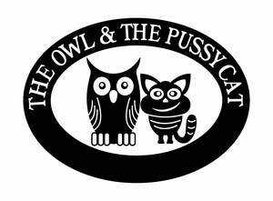

Trade Mark Journal No.2025/048 28 November 2025
UK00004294890 14 November 2025 (29,30,32)

- Class 29
- Potato cakes; Crisps; Tea flavored eggs; Potato crisps; Crisps (Potato -); Potato crisps in the form of snack foods; Fruit-based fillings for cakes and pies; Cows' milk; Meat; Meat and meat products; Sausage meat; Turkey meat; Cooked meat; Roast meat; Meat burgers; Minced meat; Canned meat; Meat, canned; Tinned meat; Meat, tinned; Canned cooked meat; Fresh meat; Processed meat; Cooked meat dishes; Beef; Cooked meats; Meat spreads; Mincemeat [chopped meat]; Roast beef; Beef meatballs; Chicken sausages; Cooked poultry; Meat, tinned [canned (Am.)]; Dried fruit; Dried fruits; Dried fruit products; Dried fruit mixes; Vegetables, dried; Dried vegetables; Dried mangoes; Dried strawberries; Dried blueberries; Dried pineapples; Prepared dried fruit mixes; Fruit, stewed; Stewed fruit; Sliced fruit; Dried fruit-based snacks; Dried milk; Fruit, processed; Canned sliced fruits; Tinned fruits; Fruits, tinned; Cooked fruits; Canned fruits; Fruits, canned; Fruit, preserved; Dried milk for food; Fruit snacks; Fruit salads; Salads (Fruit -); Dairy products and dairy substitutes; Dairy products; Dairy desserts; Cream [dairy products]; Cream, being dairy products; Dairy puddings; Dairy spreads; Chilled dairy desserts; Soya milk; Drinks made from dairy products; Soy milk beverages; Goat milk; Milk products; Milk; Soya milk [milk substitute]; Organic milk; Non-dairy milk substitutes; Milk curds; Low fat dairy spreads; Oat milk; Milk beverages; Almond milk; Cheese products; Coconut milk; Desserts made from milk products; Milk beverages with high milk content; Soya-based beverages used as milk substitutes; Milk based beverages [milk predominating]; Milk powder for foodstuffs; Coconut milk [beverage]; Soya yoghurt; Coconut milk used as beverage; Oat-based beverages [milk substitute]; Milk beverages with cocoa; Almond milk-based beverages; Cream cheese; Milk based drinks [milk predominating]; Milk solids; Jellies for food, other than confectionery; Fruit desserts; Candied fruit snacks; Yoghurt desserts; Fruit jellies [not being confectionery]; Sweet corn-based snack foods; Strawberry jam; Raspberry jam; Rhubarb jam; Blackberry jam; Plum jam; Cranberry jam; Jams; Blueberry jams; Fruit jams; Jellies, jams, compotes, fruit and vegetable spreads; Marmalade; Fruit marmalade; Jellies [bread spreads]; Fruit jelly spreads; Compote; Cranberry sauce [compote]; Apple sauce (compote); Cranberry compote; Preserves, pickles; Marmalades; Jellies; Orange and ginger marmalade; Honey butter; Fruit pectin; Tomato preserves; Apple butter; Fat-based spreads for bread slices; Clotted cream; Fruit preserves; Jellies for food; Chocolate nut butter; Butter (Chocolate nut -).
- Class 30
- Biscuits; Shortbread biscuits; Bread biscuits; Chocolate biscuits; Savoury biscuits; Hardtack [biscuits]; Butter biscuits; Cheese-flavored biscuits; Wafers [biscuits]; Biscuits for cheese; Toasts [biscuits]; Savory biscuits; Rice biscuits; Wafer biscuits; Malt biscuits; Pastries, cakes, tarts and biscuits (cookies); Onion biscuits; Salty biscuits; Aperitif biscuits; Salted biscuits; Biscuits flavoured with fruit; Rolled wafers [biscuits]; Biscuits [sweet or savoury]; Petit-beurre biscuits; Chocolate coated biscuits; Salted wafer biscuits; Onion or cheese biscuits; Biscuit rusk; Filled biscuits; Chocolate covered biscuits; Biscuits containing fruit; Chocolate covered wafer biscuits; Biscuits containing chocolate flavoured ingredients; Biscuits having a chocolate flavoured coating; Scones; Biscuits having a chocolate coating; Biscuit mixes; Half covered chocolate biscuits; Milk chocolate teacakes; Chocolate coated marshmallow biscuits containing toffee; Tea cakes; Shortbread; Shortbreads; Biscuits with an iced topping; Biscuits for human consumption made from cereals; Oat biscuits for human consumption; Chocolate cakes; Chocolate for confectionery and bread; Rusks; Sweet biscuits for human consumption; Chocolate pastries; Rice cake snacks; Flapjacks [griddle cakes]; Croissants; Chocolate-coated rice cakes; Biscuits for human consumption made from malt; Crisps made of cereals; Snack food products made from rusk flour; Muesli desserts; Crumpets; Crispbread snacks; Breakfast cereals, porridge and grits; Crackers flavoured with cheese; Shortbread with a chocolate flavoured coating; Bread buns; Bread and buns; Flour for doughnuts; Hushpuppies [breads]; Flapjacks; Dough for cakes; Cereal snack foods flavoured with cheese; Milk puddings; Flavourings for cakes; Crackers flavoured with spices; Breakfast cereals flavoured with honey; Fruit cake snacks; Cakes; Shortbread with a chocolate coating; Breakfast cake; Milk chocolates; Rice crisps; Crackers flavoured with meat; Bread flavoured with spices; Danish butter cookies; Cereal-based savoury snacks; Chocolate sweets; Wholewheat crisps; Savoury pancakes; Crackers flavoured with fruit; Ice-cream cakes; Confectionery chips for baking; Iced fruit cakes; Chocolate-based fillings for cakes and pies; Biscotti dough; Biscotti; Hamburgers contained in bread buns; Malt cakes; Almond pastries; Crackers flavoured with herbs; Chocolate waffles; Iced cakes; Peanut butter confectionery chips; Puffed cheese balls [corn snacks]; Rice cakes; Cakes (Rice -); Sweets (Non-medicated -) in the nature of chocolate eclairs; Bread pudding; Snack food products made from cereal flour; Snack food products made from potato flour; Crackers flavoured with vegetables; Macaroons [pastry]; Pastries; Potato flour confectionery; Fried dough cookies; Cheese flavored puffed corn snacks; Snacks made from muesli; Muffins; Chocolate decorations for cakes; Pâté [pastries]; Pies [sweet or savoury]; Cheese balls [snacks]; Cereal snacks; Meat gravies; Oat clusters containing dried fruit; Dried herbs; Food mixtures consisting of cereal flakes and dried fruits; Snack bars containing a mixture of grains, nuts and dried fruit [confectionery]; Fruit breads; Fruit bread; Dried pasta; Fruit sugar; Pastries with fruit; Fruit pastries; Fruit cakes; Dairy confectionery; Dairy chocolate; Milk chocolate; Chocolate beverages with milk; Chocolate food beverages not being dairy-based or vegetable based; Cocoa beverages with milk; Chocolate-based beverages with milk; Non-medicated confectionery containing milk; Dairy-free chocolate; Chocolate beverages containing milk; Sweets; Candies [sweets]; Sweets [candy]; Sugar-free sweets; Caramels [sweets]; Sugarfree sweets; Sugarless sweets; Sweets (Non-medicated -) being acidulated caramel sweets; Sweets (Non-medicated -); Sweets (Non-medicated -) in the nature of sugar confectionery; Sweetmeats [candy] being flavoured with fruit; Foamed sugar sweets; Sweets (candy), candy bars and chewing gum; Chocolate candies; Chocolate desserts; Lollipops [confectionery]; Candies; Sweetmeats [candy] containing fruit; Prepared desserts [confectionery]; Chocolate decorations for confectionery items; Panned sweets (Non-medicated -); Candy decorations for cakes; Sweets (Non-medicated -) in the nature of fudge; Sherbets [confectionery]; Sugarless candies; Caramels [candies]; Sweets (Non-medicated -) in the nature of nougat; Sweetmeats; Chocolate-coated sugar confectionery; Chocolates; Chocolate confections; Chocolate confectionery; Chocolate candy with fillings; Sugar candy [for food]; Sugar confectionery; Flavoured sugar confectionery; Sugar candies (Non-medicated -); Fruit jellies [confectionery]; Jellies (Fruit -) [confectionery]; Chocolate flavoured confectionery; Chocolate confectionary; Non-medicated confectionery candy; Fruit confectionery; Puddings for use as desserts; Caramels [candy]; Foodstuffs made of sugar for sweetening desserts; Sweets (Non-medicated -) being honey based; Sherbet [confectionery]; Prepared desserts [pastries]; Chocolate beverages; Chocolate confectionery containing pralines; Chocolate flavoured beverages; Candy [sugar]; Chocolate confectionery products; Confectionery chocolate products; Drinks flavoured with chocolate; Pastilles [confectionery]; Candy cake decorations; Gummy candies; Candy cake; Confectionery; Corn-based savoury snacks; Non-medicated chocolate confectionery; Confectionery items coated with chocolate; Non-medicated sugar confectionery; Sugar confectionery (Non-medicated -); Fondants [confectionery]; Fruit jelly candy; Savory pastries; Candy coated confections; Candy; Chocolate syrups for the preparation of chocolate based beverages; Mallows [confectionery]; Jam buns; Jam filled brioches; Bean jam buns; Confectionery containing jam; Treacle tarts; Currant bread; Blueberry pies; Shortcake; Custard tarts; Pancake syrup; Bread casings filled with fruit; Doughnut mixes; Treacle cake; Sugar, honey, treacle; Toasted cheese sandwich with ham; Savory pancake mixes; Savoury pancake mixes; Instant doughnut mixes; Custard mixes; Honey glazes for ham; Fruited scones; Pancake mixes; Coulis (Fruit -) [sauces]; Fruit coulis [sauces]; Sandwich spread made from chocolate and nuts; Apple tarts; Fruit pies; Cream pies; Instant pancake mixes; Filled bread rolls; Toasted cheese sandwich.
- Class 32
- Non-alcoholic dried fruit beverages; Fruit beverages and fruit juices; Fruit juices; Mixed fruit juices; Fruit juice; Juice (Fruit -); Mixed fruit juice; Concentrated fruit juices; Organic fruit juice; Concentrated fruit juice; Fruit squashes; Soya-based beverages, other than milk substitutes; Oat-based beverages [not being milk substitutes]; Blackcurrant juice; Condensed smoked plum juice; Watermelon juice; Guava juice; Cranberry juice; Fruit juice bases.
MDH Group Holdings Ltd